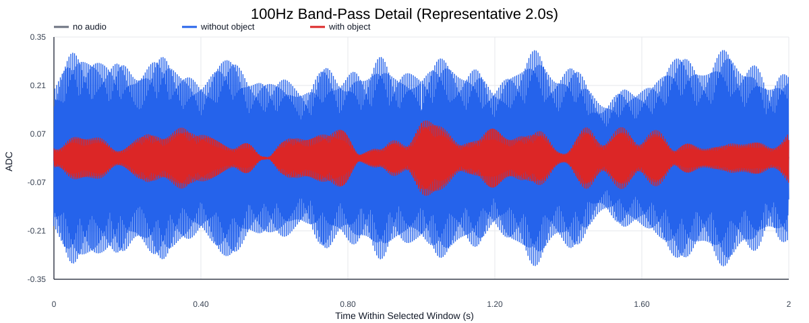
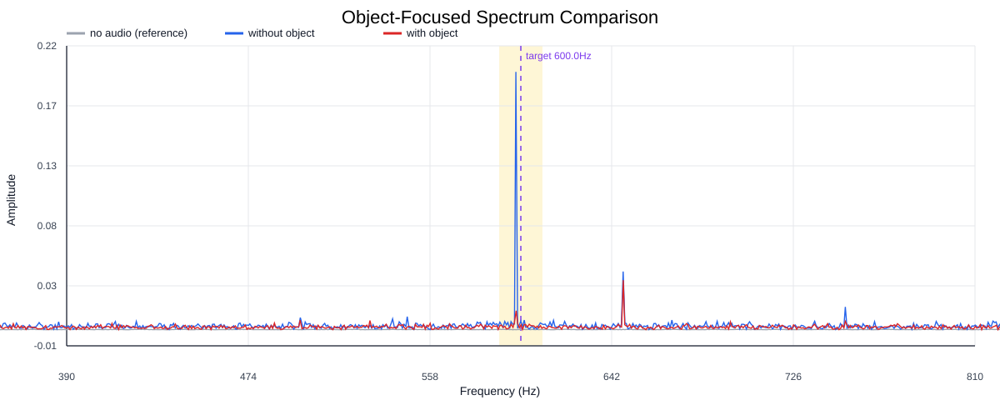
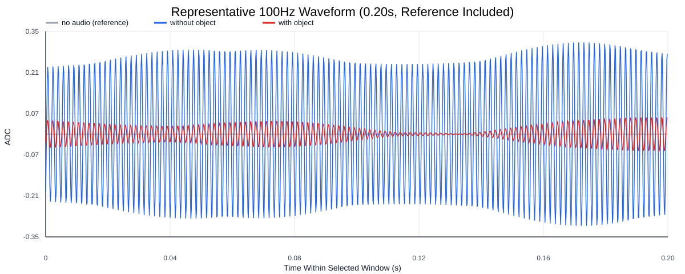
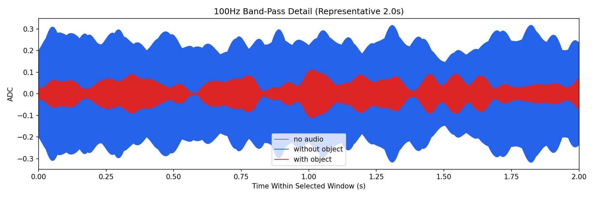
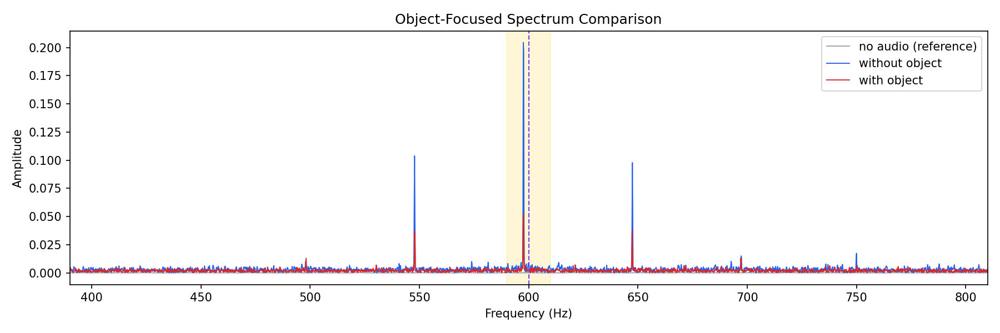
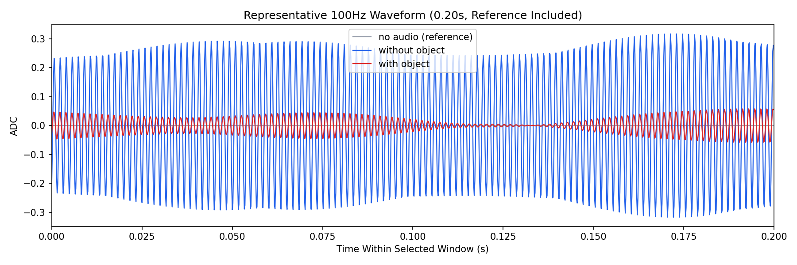

Background: F:\项目类文件夹\异物检测4.10\Data_Dual\frequency_sweep\0600Hz\repeat_03\raw\no_audio.csv
Without object: F:\项目类文件夹\异物检测4.10\Data_Dual\frequency_sweep\0600Hz\repeat_03\raw\without_object.csv
With object: F:\项目类文件夹\异物检测4.10\Data_Dual\frequency_sweep\0600Hz\repeat_03\raw\with_object.csv
| Metric | 无音频 | 100Hz无异物 | 100Hz有异物 | 无异物/无音频 | 有异物/无异物 | 有异物/无音频 |
|---|---|---|---|---|---|---|
| centered_rms | 0.014143 | 0.344360 | 0.191323 | 24.3489 | 0.5556 | 13.5280 |
| raw_target_amp | 0.000251 | 0.006607 | 0.001752 | 26.3156 | 0.2651 | 6.9759 |
| filtered_rms | 0.001287 | 0.165553 | 0.044382 | 128.6304 | 0.2681 | 34.4835 |
| filtered_target_amp | 0.000251 | 0.006607 | 0.001752 | 26.3156 | 0.2651 | 6.9759 |
| filtered_energy_ratio | 0.008282 | 0.231127 | 0.053812 | 27.9081 | 0.2328 | 6.4977 |
| window_filtered_target_amp_mean | 0.000541 | 0.228556 | 0.057694 | 422.8363 | 0.2524 | 106.7357 |
| window_filtered_target_amp_std | 0.001582 | 0.037238 | 0.021463 | 23.5411 | 0.5764 | 13.5685 |





